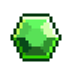
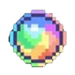

WORLD FLIPPER {{ brandMuseumLabel }}

{{ pvCount }}
{{ uvCount }}
WORLD FLIPPER
{{ heroSubtitle }}
{{ unitsScreenTitle }}
{{ unitsStatusText }}
{{ loadingRosterText }}
{{ rosterErrorTitle }}
{{ rosterError }}
{{ rosterErrorHint }}
{{ c.displayName }}
{{ filterNoMatchText }}
{{ filterCount }}
{{ filterTitleText }}
{{ filterNameTitle }}
{{ filterRarityTitle }}
{{ filterElementTitle }}
{{ filterGenderTitle }}
{{ ch.label }}
{{ filterRaceTitle }}
{{ filterCancelText }}
{{ filterOkText }}
{{ artToggleLabel }}
{{ detailEnName }}
{{ detailJpName }}
{{ emotionsTitleLabel }}
{{ emotionName }}
{{ emotionCounter }}
{{ emotionOverlaysTitleLabel }}
{{ wikiSectionInfoLabel }}
{{ row.label }}
{{ row.value }}
{{ wikiSectionSkillsLabel }}
{{ sg.caption }}
{{ se.name }}
{{ se.text }}
{{ wikiSectionStoryLabel }}
{{ wikiStoryIntro }}
{{ ib }}
{{ st.title }}
{{ st.text }}
{{ wikiSectionReviewLabel }}
{{ wikiReview }}
{{ wikiSource }}
{{ miaowm5SourceLabel }}
{{ wikiSectionVoiceLabel }}
{{ vt.icon }}
{{ vt.context }}
{{ vt.text }}
{{ vt.textJp }}
{{ wikiNoVoiceText }}
{{ storyLoadingText }}
{{ storyEmptyText }}
{{ storyListTitleLabel }}
{{ sl.title }}
{{ sl.desc }}
{{ storyDetailTitle }}
{{ sd.speaker }}
{{ sd.text }}
{{ relatedCharsTitleLabel }}
?
{{ rc.name }}
{{ relatedKeywordsTitleLabel }}
{{ rk.title }}
{{ rk.desc }}
{{ relatedEmptyText }}
{{ overlayLabel }}
{{ sectionLabel }}
{{ sectionDesc }}
{{ underConstructionTitle }}
{{ sectionBody }}